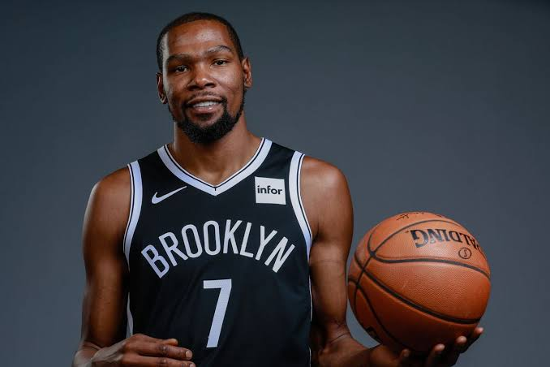

|

|
Kevin Wayne Durant (born September 29, 1988) is an American professional
basketball player for the Brooklyn Nets of the National Basketball
Association(NBA). He played one season of college basketball for the
University of Texas, and was selected as the second overall pick by
the Seattle SuperSonics in the 2007 NBA draft. He played nine seasons
with the franchise, which became the Oklahoma City Thunderin 2008,
before signing with the Golden State Warriors in 2016, winning back-
to-back championships in 2017 and 2018.
|